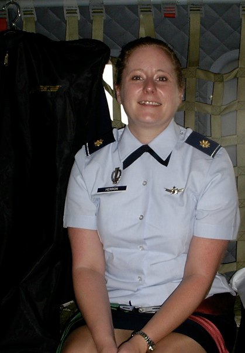

Education
Louisiana School For Math, Science &
The Arts
Natchitoches, LA
High School Diploma
University of Southern Mississippi
Hattiesburg, MS
Bachelor of Science: Mathematics
Naval Postgraduate School
Monterey, CA
MBA: Systems Acquisitions Management
